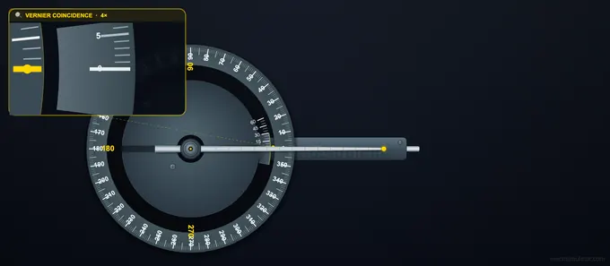

Bevel Protractor — Least Count & Vernier Reading
3D Model — Bevel Protractor — Least Count & Vernier Reading
The least count of a vernier bevel protractor is 5 arcminutes (5' = 1/12°). Practise reading any angle on a free interactive universal bevel protractor.
5' Vernier Least Count • Drag to Set Angle • Free • Practice • Quiz
1 Overview
This bevel protractor simulator (vernier bevel protractor simulator) is a free online tool for practising how to read a bevel protractor with 5 arcminute (5') vernier least count. The universal bevel protractor is a precision angular measuring instrument used in toolrooms, machine shops, and metrology labs for measuring both acute and obtuse angles to within 5 minutes of arc. This simulator is designed for engineering students, machinist trainees, tool-and-die apprentices, and engineering diploma candidates preparing for practical metrology assessments.
2 Setting the Zero
The simulator opens in Simulate mode with the blade set to 0°. To begin:
- Drag the blade to rotate it and set any angle. You can also use the left/right arrow keys for fine 5' increments.
- The info row below the canvas shows four values: Total Reading (degrees and minutes), MSR (main scale degrees), VSC (vernier scale coincidence division), and LC (5').
- The formula panel displays: TR = MSR + (VSC × 5') with live values.
- Use the Zoom button to magnify the vernier coincidence area for accurate identification of the aligned line.
3 Taking a Reading
In Simulate mode the blade rotates freely around the centre pivot. As you adjust the angle, observe how the vernier zero moves along the main scale (graduated in 1° intervals) and how different vernier divisions align with main scale graduations. The vernier scale has 12 divisions spanning 23° on the main scale. Each vernier division = 23°/12 = 1° 55'. The difference between one main scale division (1°) and one vernier division (1° 55') gives the least count of 5'. This mode helps you build a visual understanding of the vernier coincidence method for angular measurement.
4 Practice & Quiz
Practice mode: A random angle is set and the blade is locked. Read the main scale for whole degrees and find the vernier coincidence for arcminutes. Enter both the degree and minute values in the input fields, then click Check for instant feedback. Click Next for another random angle. Your running score is displayed.
Quiz mode: A timed series of 5 questions tests your bevel protractor reading accuracy under exam conditions. After completing all questions, a results panel shows your score, star rating, and a per-question breakdown. The quiz requires you to enter both degrees and minutes correctly.
5 Understanding the Vernier Reading
The bevel protractor reading consists of two parts:
- MSR (Main Scale Reading): The whole degree value that the vernier zero has just passed on the main scale disc.
- VSC (Vernier Scale Coincidence): The vernier division (0–12) that aligns most precisely with any main scale graduation. Each division = 5'.
Total Reading = MSR + (VSC × 5'). Example: MSR = 47°, 8th vernier division coincides → TR = 47° + (8 × 5') = 47° 40'. For obtuse angles, read the supplementary value on the opposite side of the scale.
6 Workshop Tips
- Ensure the blade sits firmly against the workpiece surface before locking the reading — any gap introduces angular error.
- Use the fine-adjustment clamp on the real instrument to make micro-adjustments after coarse positioning, then lock the turret before reading.
- When identifying the vernier coincidence, look for the line that forms a single continuous straight line with the main scale graduation — view perpendicular to the scale to avoid parallax.
- For acute angles less than 90°, read directly from the scale. For obtuse angles, some bevel protractors require reading from the complementary side — practise both in this simulator.
How to Read a Bevel Protractor — Online Vernier Angle Measurement Practice

A vernier bevel protractor (also called a universal bevel protractor) is a precision angular measuring instrument used in toolrooms, machine shops, and metrology laboratories. Unlike a simple protractor that reads to the nearest degree, the bevel protractor incorporates a vernier scale that subdivides each degree into 5-arcminute (5') intervals, giving it a least count of 5 minutes of arc.
Parts of a Bevel Protractor
The instrument consists of several key components: a main body (stock) carrying the graduated circular disc with 0–360° markings at 1° intervals; a turret (swivel plate) that rotates concentrically with the disc; a vernier scale attached to the turret with 12 divisions spanning 23°; a blade that slides through the turret and can be locked at any angle; and a fine-adjustment clamp for precise setting. The blade and turret rotate together around the centre pivot.
Bevel Protractor Least Count — How the 5' Vernier Scale Works
The vernier principle applied to angular measurement follows the same logic as a linear vernier caliper. On the main scale, each division represents 1 degree. The vernier scale has 12 divisions that span exactly 23 degrees on the main scale. Therefore, each vernier division = 23° / 12 = 1° 55'. The difference between one main scale division (1°) and one vernier division (1° 55') gives the least count = 1° − 1° 55' = 5' (5 arcminutes).
Step-by-Step: How to Read the Bevel Protractor
Step 1 — Main Scale Reading (MSR): Locate the vernier zero line on the turret. Read the degree value on the main scale that the vernier zero has just passed (the degree mark immediately before the zero). This is your MSR in whole degrees. Step 2 — Vernier Scale Coincidence (VSC): Scan the 12 vernier division lines (numbered 0 through 12, or 0 through 60 in minutes) and find which vernier line aligns most precisely with any main scale graduation. Note this division number. Step 3 — Total Reading: Compute TR = MSR + (VSC × 5'). For example, if MSR = 47° and the 8th vernier line coincides, TR = 47° + (8 × 5') = 47° 40'.
Applications of the Bevel Protractor
Bevel protractors are used to measure and lay out angles on workpieces for milling, grinding, and inspection operations. Common tasks include checking chamfer angles on turned components, setting up tilting tables on milling machines, verifying dovetail slides, measuring taper angles, and inspecting V-blocks. In tool and die making, the bevel protractor is essential for checking clearance angles, rake angles, and included angles on cutting tools and press-tool components.
Tips for Accurate Measurement
Always ensure the blade sits firmly against the workpiece surface. Use the fine-adjustment clamp to make micro-adjustments before locking the reading. When reading the vernier, look for the line that is perfectly collinear with a main scale graduation — the two lines should merge into one continuous line when viewed straight on. Avoid parallax by aligning your line of sight perpendicular to the scale surface.
Who Uses This Simulator?
This interactive bevel protractor simulator is designed for ITI/diploma engineering students, machinist and tool-maker trainees, engineering education metrology learners, and anyone preparing for practical assessments in engineering metrology or workshop technology. It faithfully replicates the vernier coincidence method so you can build confidence before handling the real instrument.
Explore Related Simulators
If you found this Bevel Protractor simulator helpful, explore our Protractor simulator, Vernier Caliper simulator, and Dial Gauge simulator for more hands-on practice.